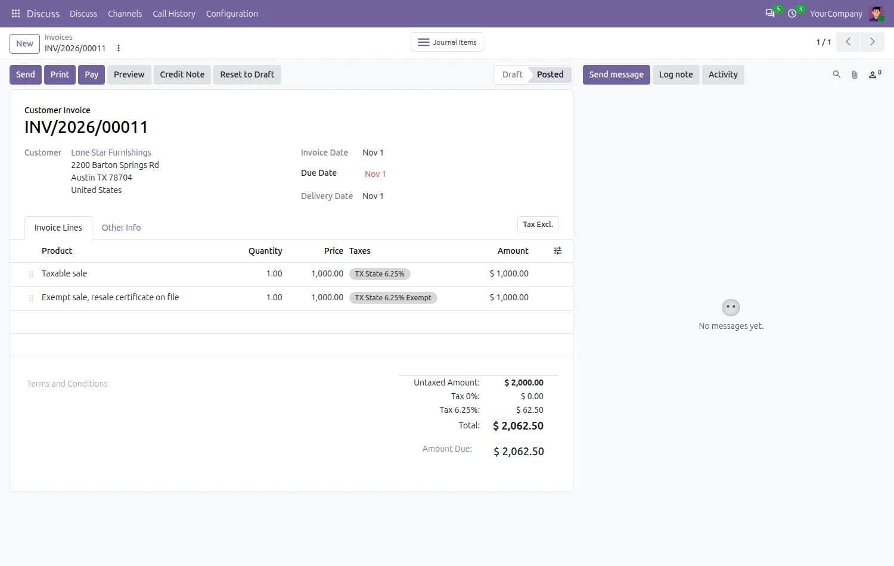
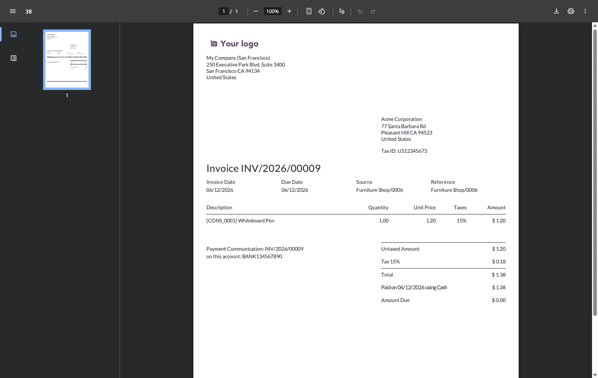

Open PDF Reports in Browser
Open PDF reports in a new browser tab instead of downloading them
- Price
- Free
- Odoo versions
- 16.0
- 17.0
- 18.0
- 19.0
- 20.0
- Technical name
tamadoo_pdf_in_browser- License
- LGPL-3
Odoo 20.0: not listed on the store yet. Ask at tama.odoo@gmail.com.

Text and screenshots below are from the Odoo 20.0 version of this module.
View PDFs in a new tab — no more cluttered Downloads folder.
What it does
Every QWeb PDF report — invoices, sale orders, deliveries, payslips — opens in a new browser tab instead of being downloaded. Review it on screen, then print or save only if you actually need to.
- Works for every PDF report, automatically.
- No configuration — install and it just works.
- HTML / text reports keep their normal behaviour.
How it looks
1. Print a report as usual

2. The PDF opens in a new browser tab

Step by step
1. Install the module
There is nothing to configure.
2. Print as usual
Open any document, for example an invoice or a sales order, and print a PDF report the way you always do.
3. Read it in the browser
The PDF opens in a new browser tab instead of going to the Downloads folder. Print or save it from the browser's PDF viewer if you need to.
Requirements
- Odoo 16 / 17 / 18 / 19 / 20 — Community or Enterprise.
- Depends only on
web. No external dependencies.
Tamadoo · tama.odoo@gmail.com
Get Open PDF Reports in Browser
Odoo 20.0: not listed on the store yet. Ask at tama.odoo@gmail.com.
Questions before buying? Write to tama.odoo@gmail.com.